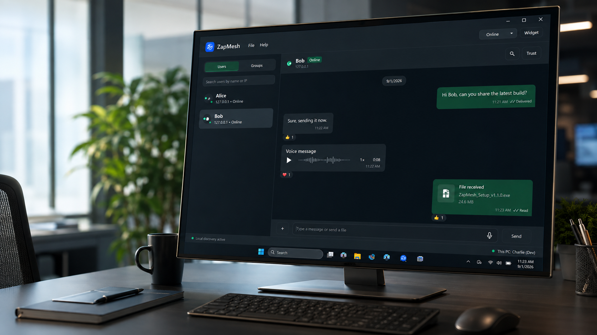
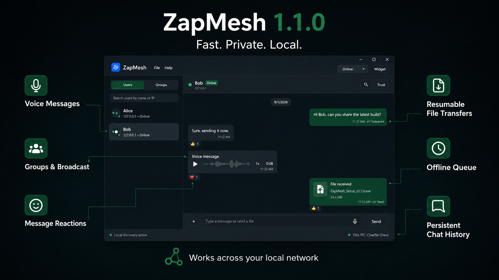

Clear voice messages
Record without holding the button, preview before sending, seek through audio and listen at 1×, 1.5× or 2× speed.
Private team chat, clear voice messages, groups and resilient file transfers—directly between Windows PCs on the same LAN.
Windows x64 · Self-contained installer · No separate .NET installation required

Version 1.1.0 turns ZapMesh into a complete LAN communication workspace without making the interface feel complicated.
Record without holding the button, preview before sending, seek through audio and listen at 1×, 1.5× or 2× speed.
Large transfers resume after an interruption and use file hashing to verify received content.
Messages wait safely while a peer is unavailable and send automatically when they return online.
React with full-color emoji. Shared reactions aggregate into a clean count with a detailed participant list.
Create groups, add or remove members, transfer administration, rename, mute, archive or leave.
Messages remain available after restart and are preserved when a newer ZapMesh build is installed.
Discover nearby users and exchange compact, readable messages with sent, delivered and read states.
Share work directly across the LAN with progress, acceptance controls and clear completion feedback.
Find text, files or voice messages by type and date, then jump directly to the matching conversation item.

Sharper contrast, readable typography, compact bubbles and adaptive navigation make longer sessions easier.
Content-sized bubbles, date separators and high-contrast delivery indicators.
Full navigation on desktop and a drawer when the window becomes compact.
Menus, fields, popups, settings and icons remain readable in both themes.
Watch ZapMesh move from discovery to conversation, voice messages, reactions and fast file sharing across multiple PCs.
Run the self-contained Windows installer. No separate runtime is required.
Connect each Windows PC to the same trusted Wi-Fi or Ethernet network.
Nearby ZapMesh users appear automatically, with optional adapter selection.
Chat, record voice, create groups and transfer files directly.
A self-contained Windows x64 setup package designed to preserve existing chats and settings during upgrades.
Core communication is designed for devices on the same local network. Internet access may be needed only for downloading releases or checking updates.
No. The official v1.1.0 installer is self-contained for Windows x64.
No. The v1.1.0 installer preserves the device's existing ZapMesh history, settings and received files.
Outgoing messages remain queued and are sent automatically when the peer becomes available again.
Report an issue, request a feature or ask about deploying ZapMesh on your Windows network.